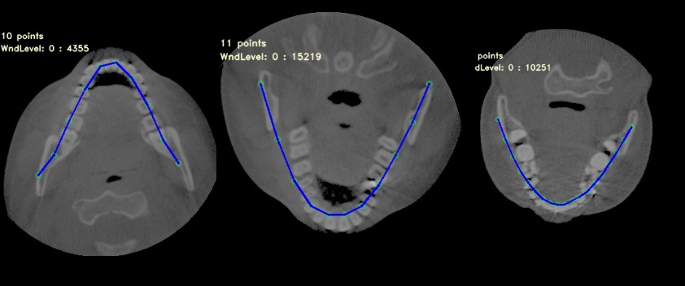
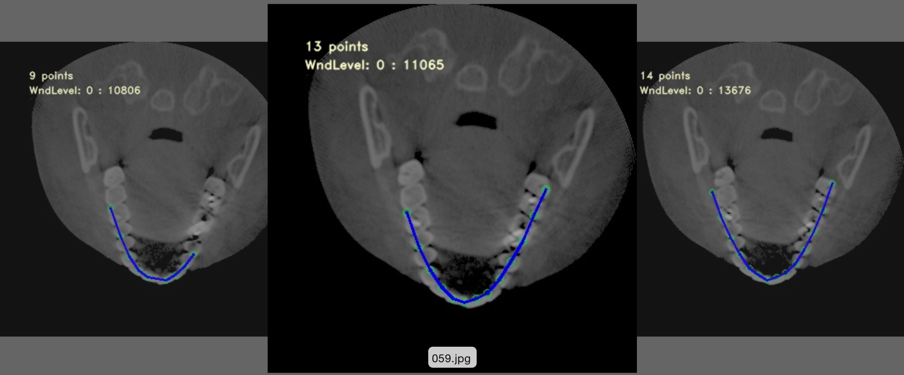

Since it makes sense to say most of the CT scanned images represent
various kinds of the visible defects of teeth, the algorithm so needs
to be flexible enough to overcome those obstacles.
The very common defects are lost teeth, appearance of artificial teeth,
fillings. Those defects easily mislead the naive algorithms because
any holes, displacements of the teeth could confuse the detection. However
there is no excuse the algorithm must function properly and accurately
despite an occurrence of those defects.

Curve-model-based approach has been opted over the pixel-based detection
due to the clear fact that pixel-based processing is not capable of
overcoming the common defects as aforementioned. Fortunately,